Operating Documentation
Direction 5440001-3, Rev# 6
Signa HDxt Service Methods
Module Version 5.0, Version Date 11/14/09
Operating Documentation |
| Required Persons | Preliminary Reqs | Procedure | Finalization | |||
| 1 | Not Applicable | 60 mins | Not Applicable |
This procedure outlines how to replace or repair the Table Pinch Guard and Arm Board Bumper which can be damaged or break off after long periods of active use.
| Item | Qty | Effectivity | Part Number | Manufacturer | ||||
| Allen Keys, 3/32 | 1 | - | - | - | ||||
| Minus Screw Driver | 1 | - | - | - | ||||
| Flat Screw Driver | 1 | - | - | - | ||||
| J-Roller (Optional) | 1 | - | - | - |
Illustration 1: Required Tools
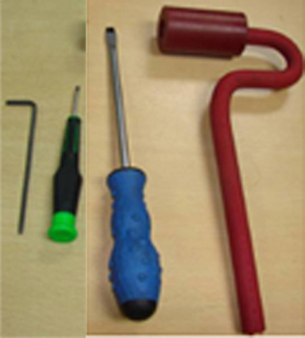
| Item | Qty | Effectivity | Part Number | Manufacturer | ||||
| White Petroleum Jelly | As required | - | Local Purchase | Biolin/Vaseline | ||||
| Towels or Rags | As required | - | Local Purchase | - | ||||
| Isopropyl Alcohol | 1 | - | 46-183000AP164 | - | ||||
| Transparent Glue Tape | As required | - | Local Purchase | - |
Table 1: New Parts List
| System Description | Table Part Number | New Part Description | FRU Part Number |
| HDMR-2 Table | 5146012 | Pinch Guard | 5165064 |
| Arm Board Bumper | 5191719 | ||
| HDe Table | 5146014 | Pinch Guard | 5165064-3 |
| Arm Board | 5191719-3 | ||
| Signa Infinity Table | 46-265300G4 | Pinch Guard | 5165064-2 |
| Arm Board | 5191719-2 | ||
| Signa Lite Table | 2320351 | Pinch Guard | 5165064-4 |
| Arm Board | 5191719-4 |
Illustration 2: New Pinch Guard
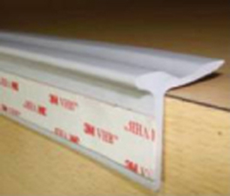
Illustration 3: New Arm Board Bumper
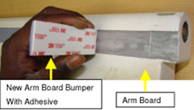
| NOTE: | The parts in Table 2 are obsolete and should be replaced with the new pinch guards and arm board bumpers list in Table 1. |
Table 2: Obsolete Parts List
| Old Part Description | Old Part Number |
| Old Pinch Guard - HDMR-2 Table | 5145943 |
| Old Pinch Guard – Signa Infinity Table | 46-271017P3 |
| Old Pinch Guard – HDe Table | 5145943 |
| Old Pinch Guard – Signa Lite Table | 46-271017P3 |
| Old Arm Board Bumper– HDMR-2 Table | 5145936 |
| Old Arm Board Bumper – Signa Infinity Table | 2332967-2 |
| Old Arm Board Bumper – HDe Table | 5145967 |
| Old Arm Board Bumper – Signa Lite Table | 2335206 |
| NOTE: | Ensure proper color component used based on the color of the table. |
| NOTE: | To replace a failed pinch guard, order one of the following FRU kits, depending on table type. Both the pinch guard and arm board bumper must be replaced. |
Table 3: Pinch Guard FRU Kit Parts
| New Part Description | New FRU Kit Part Numbers |
| New Pinch guard and Arm Board Bumpers FRU Kit for Signa Lite Table | 5214978 |
| New Pinch guard and Arm Board Bumpers FRU Kit for Signa Infinity Table | 5215476 |
| New Pinch guard and Arm Board Bumpers FRU Kit for HDMR-2 Table | 5215397 |
| New Pinch guard and Arm Board Bumpers FRU Kit for HDe Table | 5215652 |
| NOTE: | To replace a failed arm board, order one of the following FRU kits, depending on table type. |
Table 4: Arm Board Bumper FRU Kit Parts
| New Part Description | New FRU Kit Part Numbers |
| New Arm Board Bumpers FRU Kit for Signa Lite Table | 5257699 |
| New Arm Board Bumpers FRU Kit for Signa Infinity Table | 5257697 |
| New Arm Board Bumpers FRU Kit for HDMR-2 Table | 5257698 |
| New Arm Board Bumpers FRU Kit for HDe Table | 5257700 |
If your system has the old pinch guard and/or arm board bumper (see Table 2), start with Section 4. If your system has the new pinch guard and/or arm board bumper (see Table 1), start with Section 6.
| NOTE: | Service of the table shall be done out of the magnet room. |
| ||||
| PERSONAL INJURY POSSIBILITY! | ||||
| WHEN PERFORMING MAINTENANCE OR REPLACEMENT OF PARTS ON THE TABLE, ENSURE THAT ALL FOUR CASTER WHEELS TO BE LOCKED BEFORE SERVICING. | ||||
| ALSO DO NOT LOAD THE TABLE DURING MAINTENANCE. |
Illustration 4: Lock the Caster Wheels
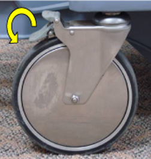
Illustration 5: Table Before Arm Board Removal

Loosen the grub screws on both sides of the arm board using 3/32 Allen key. See Illustration 6.
Illustration 6: Loosen the Grub Screws

Push the grub screw using Allen key to move the arm board hinge out. See Illustration 7.
Illustration 7: Move Out the Arm Board Hinge

| ||||
| Possible Personal Injury! | ||||
| The arm boards may fall off if not held properly. | ||||
| Ensure that you hold the arm boards properly. |
Remove the arm boards. See Illustration 8.
Illustration 8: Remove the Arm Boards
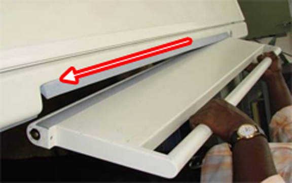
Illustration 9: Table After Arm Board Removal

Peel the pinch guard 3-4 inches away from one side of the tabletop. See Illustration 10.
Illustration 10: Peel Away the Pinch Guard from One Side of Tabletop
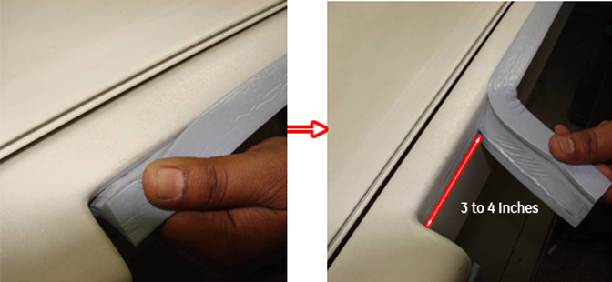
Peel the pinch guard 3-4 inches away from the other side of the tabletop. See Illustration 11.
Illustration 11: Peel Away the Pinch Guard from the Other Side of Tabletop
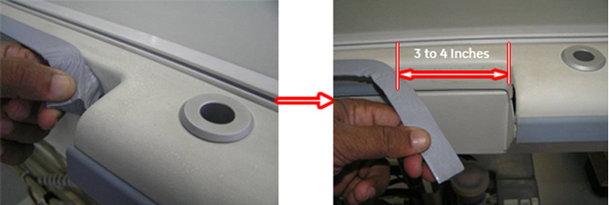
Fold the pinch guard backward and tape it to the cradle with transparent glue tape. See Illustration 12 and Illustration 13.
Illustration 12: Fold and Tape the Pinch Guard
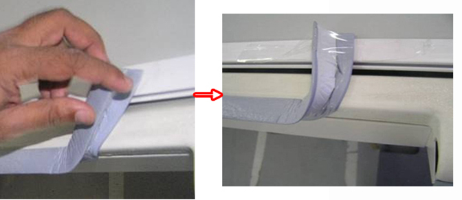
Illustration 13: Pinch Guard to be Held in Cradle on Each Side of Table
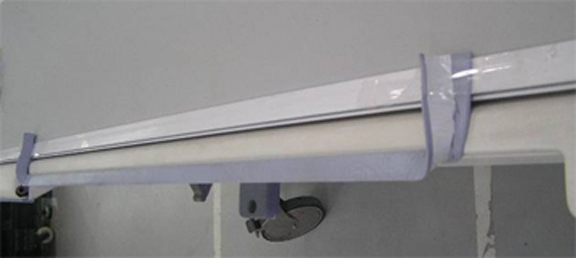
Put back the arm board assembly:
Assemble the arm board to the tabletop.
Lock the arm board at 90° as shown in Illustration 14.
Illustration 14: Pinch Guard Mounting Gap
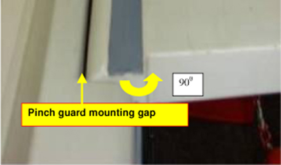
| NOTE: | New pinch guard will not squeeze as the old pinch guard (foam type) did, so gap checking is required (see Steps 5 and 6). |
Measure the gap between the tabletop FRP and arm board and confirm it is 2.5 mm. See Illustration 15. Check along the specified length of 3 to 4 inches of the pinch guard removed region on either side. See Illustration 16.
Illustration 15: Check Gap Between Tabletop FRP and Arm Board
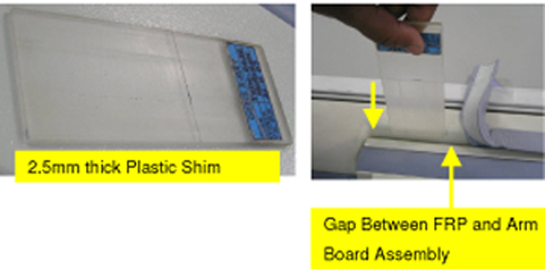
Illustration 16: Check for Entry of Plastic Shim
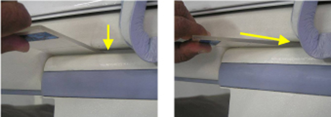
If the plastic shim enters in the specified gap freely, remove the old pinch guard. Peel off the old pinch guard from tabletop FRP slowly, as shown in Illustration 17, without damaging the FRP surface.
Illustration 17: Peel Off the Old Pinch Guard
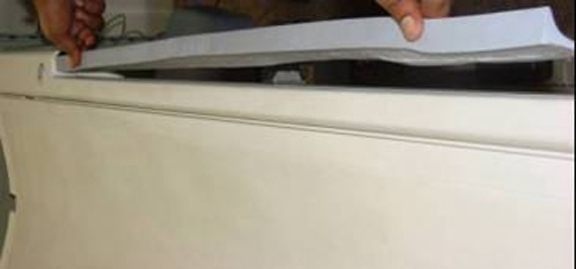
| NOTE: | If 2.5 mm plastic shim enters the gap freely on either end of the pinch guard seating region for the specified length of 3 to 4 inches, then proceed directly to Section 6. If not, proceed to Section 5.3. |
| NOTE: | In case of 2.5 mm plastic shim not entering in the gap, full tabletop assembly has to be ordered and replaced. The new pinch guard requires a minimum 2.5 mm gap between the arm board and tabletop. Less than a 2.5 mm would result in compression of the pinch guard by the armboard. This would also result in the tabletop becoming unglued at the armboard, causing the cradle to rub against the tabletop during cradle movement. |
Use the new Tabletop Assembly FRU Kit for Signa Infinity Tables (p/n 5160616) and Tabletop Assembly FRU Kit (p/n 5305245) for HDMR-2 Tables to replace the old tabletop assembly. Follow Tabletop Assembly Replacement Procedure.
| NOTE: | Follow Steps 2 through 4 to reassemble the opened pinch guard on each side of the tabletop until the replacement of the tabletop assembly is complete. |
Remove the transparent tape holding the loosened portion of the pinch guard to the table. See Illustration 18
Illustration 18: Remove Transparent Tape from the Pinch Guard
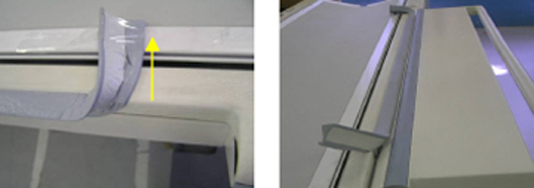
Apply double-sided tape to the loosened portion of the pinch guard and press the guard back into place.
Illustration 19: Apply Double-Sided Tape to the Pinch Guard and Press into Place
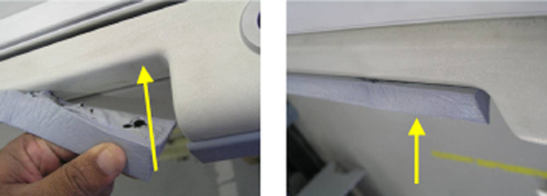
Assemble the new arm board bumper to the arm board assembly following instruction in Section 6.2 and Section 6.3.
Slowly peel off the old arm board bumper from the arm board, as shown in Illustration 20. Illustration 21 shows an arm board without a bumper.
Illustration 20: Remove Old Arm Board Bumper
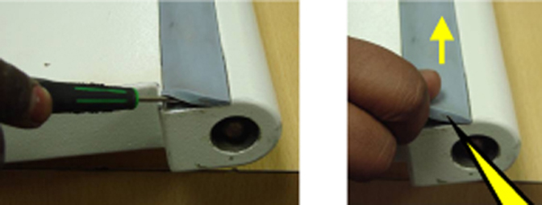
Illustration 21: Arm Board without Bumper
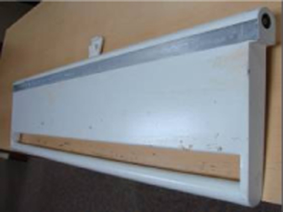
Clean the tabletop FRP at the pinch guard seating area with cotton wipes soaked in IPA (isopropyl alcohol). See Illustration 22.
Illustration 22: Pinch Guard Seating Area
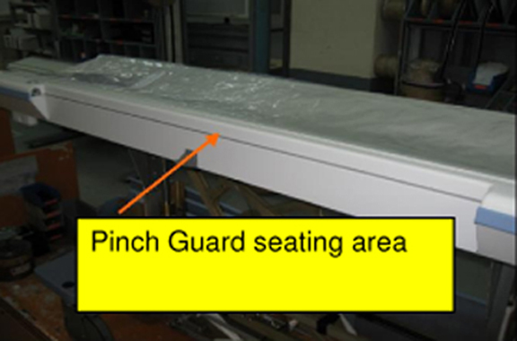
| ||||
| Possible equipment damage! | ||||
| Do not damage the FRP surface while cleaning the tabletop FRP. |
Illustration 23: New Pinch Guard with Glued 3M Double-Sided VHB Tape
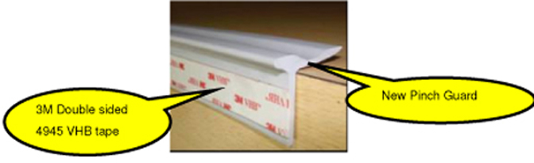
Remove the outer liner of the double-sided tape for a short distance, as shown in Illustration 24.
Illustration 24: Remove the Outer Liner of the Double-Sided VHB Tape
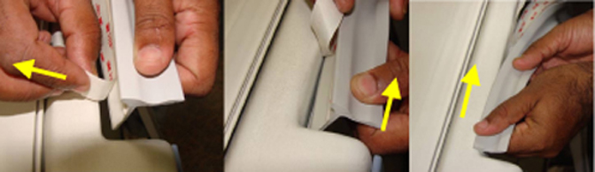
Apply the pinch guard to the tabletop FRP, matching the radius at one end, as shown in Illustration 25. Continue pressing the pinch guard into place along the full length of the tabletop FRP.
| NOTE: | Ensure that the backside profile of the pinch guard matches with the FRP, as shown, over the full length of the FRP. |
Illustration 25: Apply the Pinch Guard to the Tabletop
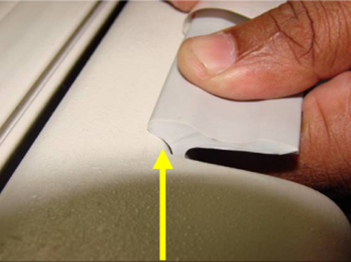
After attaching the new pinch guard at one end, slowly remove the outer liner from the double-sided tape, as shown in Illustration 26.
Illustration 26: Remove the Outer Liner of the Double-Sided VHB Tape
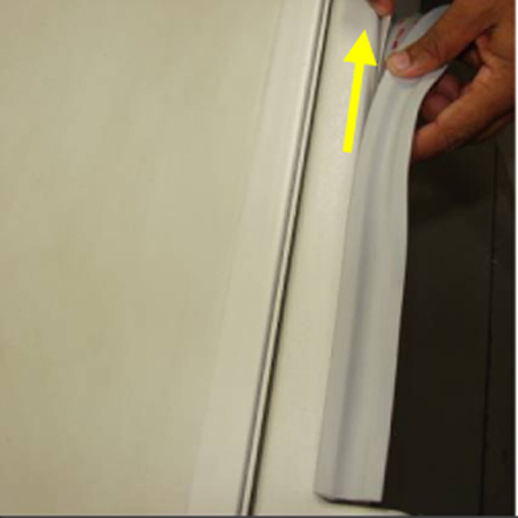
Paste the pinch guard to the tabletop FRP, as shown in Illustration 27, and maintain the uniformity in pasting the pinch guard profile to the tabletop over full length.
Illustration 27: Paste the Pinch Guard to the Tabletop
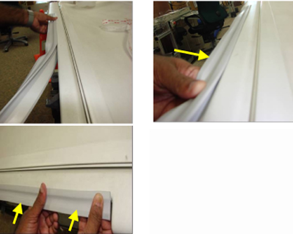
| ||||
| Ensure backside profile of the pinch guard butts with the FRP properly. See Illustration 28. It should be straight all along the length and there should be no unevenness while gluing. If unevenness is observed after gluing, the component can be unglued immediately and then glued properly before applying pressure in Step 6. | ||||
Illustration 28: Ensure Even Backside Profile of the Pinch Guard
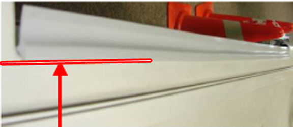
Illustration 29: Pressure to be Applied on the Pinch Guard Surface Over Full Length
Apply adequate pressure on the pinch guard surface about 10 times over full length using the round surface of a suitable plastic tool, as shown in Illustration 30.
Illustration 30: Apply Adequate Pressure to the Pinch Guard
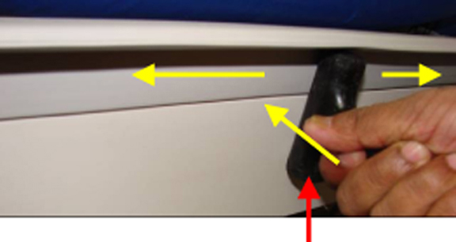
| NOTE: | The pinch guard contains pressure sensitive adhesive and applying pressure is required to achieve good adhesion. |
Wipe the bottom surface of the pinch guard with white petroleum jelly (Vaseline/Biolin), as shown in Illustration 31, to avoid Initial friction between the arm board bumper surface and the new pinch guard.
Illustration 31: Wipe the Bottom Surface of the Pinch Guard
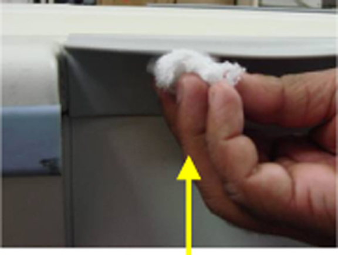
Repeat Steps 1-7 to assemble the new pinch guard on the other side of tabletop FRP.
Clean the new arm board bumper seating region with emery paper to remove the residue of previous glue.
| NOTE: | You will find hardened glue residue on this surface. After cleaning with emery paper use IPA (Isopropyl Alcohol) to clean the surface. |
Illustration 32: Clean the Arm Board Bumper Seating Region
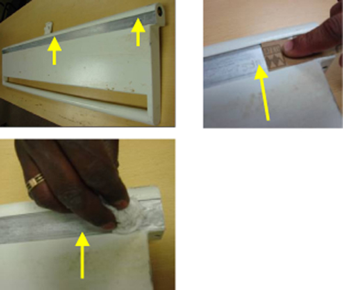
Illustration 33: New Arm Board Bumper with Glued 3M Double-Sided VHB
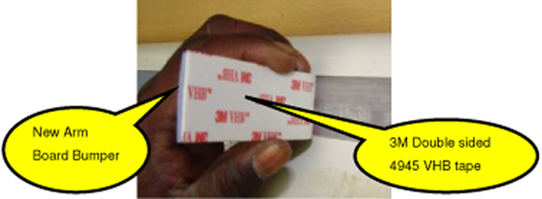
Slowly remove outer liner of the adhered VHB tape on the new arm board bumper as shown sequentially while placing the arm board bumper in the arm board slot as shown in the following steps.
Illustration 34: Remove Outer Liner of VHB Tape
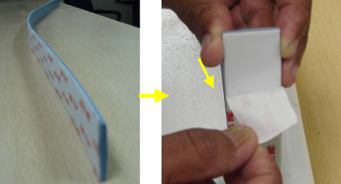
Paste the new arm board bumper with adhesive to the arm board exactly matching to the edge as shown in Illustration 35.
Illustration 35: Paste Arm Board Bumper Over Full Length
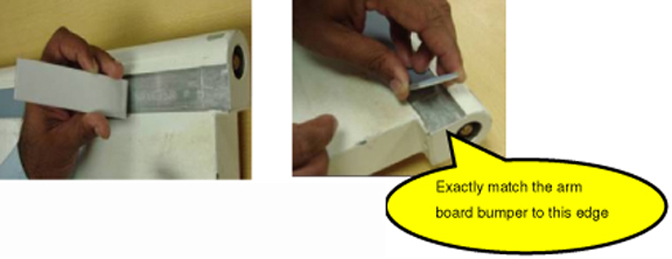
Press the arm board bumper after aligning correctly in the slot as shown in Illustration 36.
Illustration 36: Apply Adequate Pressure on the New Arm Board Bumper Surface
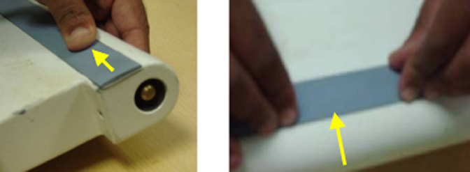
| ||||
| Ensure new arm board bumper with adhesive sits in the slot properly without unevenness. | ||||
Assemble the arm board bumper over full length as shown in Illustration 37.
Illustration 37: Assemble Arm Board Over Full Length
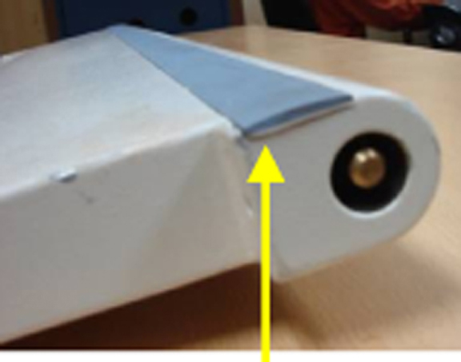
Apply adequate pressure on the new arm board bumper surface about 10 times over full length using the round surface of a suitable plastic tool.
| NOTE: | The pinch guard contains pressure sensitive adhesive and applying pressure is required to achieve good adhesion. |
Illustration 38: Apply Pressure with Suitable Plastic Tool
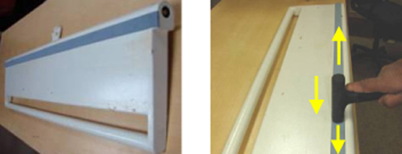
Wipe the top surface of the new arm board bumper with white petroleum jelly (Vaseline/Biolin), as shown in Illustration 39, to avoid Initial friction between the arm board bumper surface and the new pinch guard.
Illustration 39: Wipe the Top Surface of the New Arm Board Bumper
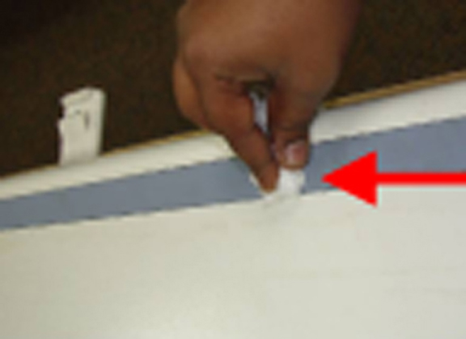
Repeat Steps 1-7 to assemble the arm board bumper on the other side of the tabletop.
Put back the both L.H and R.H arm boards as shown after assembling the arm boards with new pinch guards and arm board bumpers.
Illustration 40: Assemble the LH and RH Arm Boards
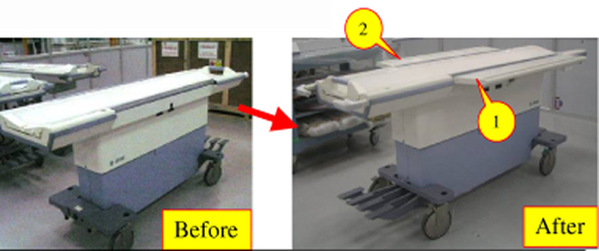
Flex both the arm boards about 5 times to the maximum lock position and ensure the locking of arm boards is proper.
Illustration 41: Flex Arm Boards to Ensure Proper Locking
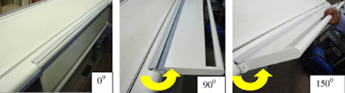
Re-inspect the entire table and arm boards for proper functioning. Ensure all the parts are put back in same locations as before disassembling the table.
Return the table to the customer for use.